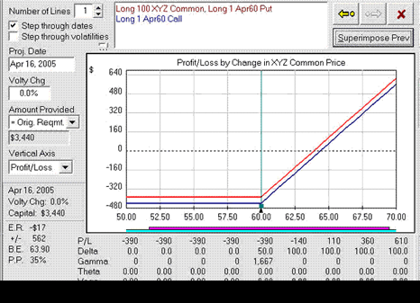

A principle referring to the static price relationship, given a stock's price, between the prices of European put and call options of the same class (i.e. same underlying, strike price and expiration date). This relationship is shown from the fact that combinations of options can create positions that are the same as holding the stock itself. These option and stock positions must all have the same return or an arbitrage opportunity would be available to traders. Any option pricing model that produces put and call prices that don't satisfy put-call parity should be rejected as unsound because arbitrage opportunities exist.
The above illustration demonstrates a simple put-call parity relationship. Looking at the graph, we see that a long-stock/long-put position (red line) has the same risk/return profile as a long call (blue line) with the same expiration and strike price. The only difference between the two lines is the assumed dividend that is paid during the time to expiration. The owner of the stock (red line) would receive the additional amount, while the owner of the call (blue line) would not. However, if we assume no dividend would be paid to stockholders during the holding period, then both lines would overlap.
{kind=link}